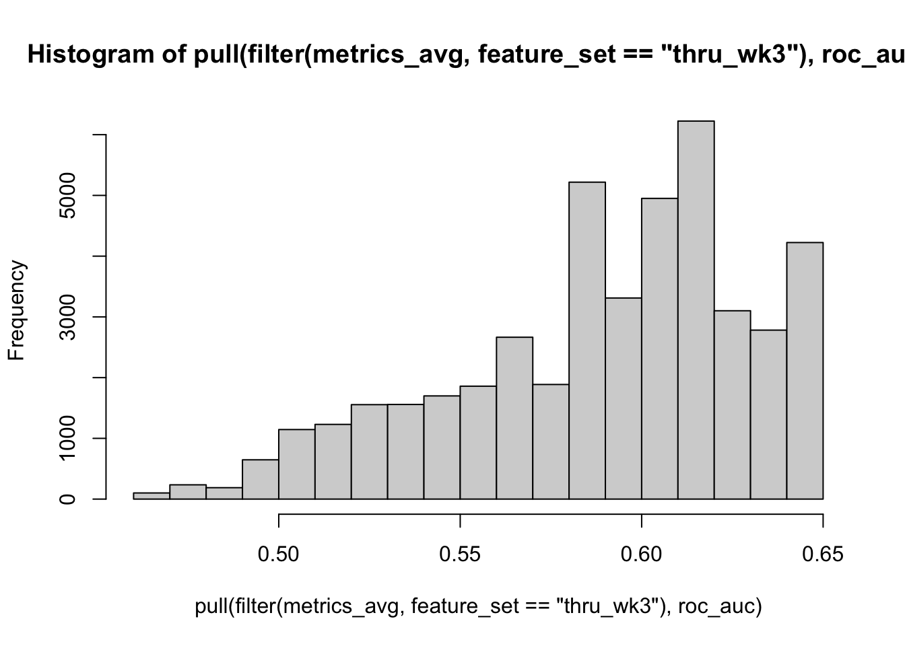
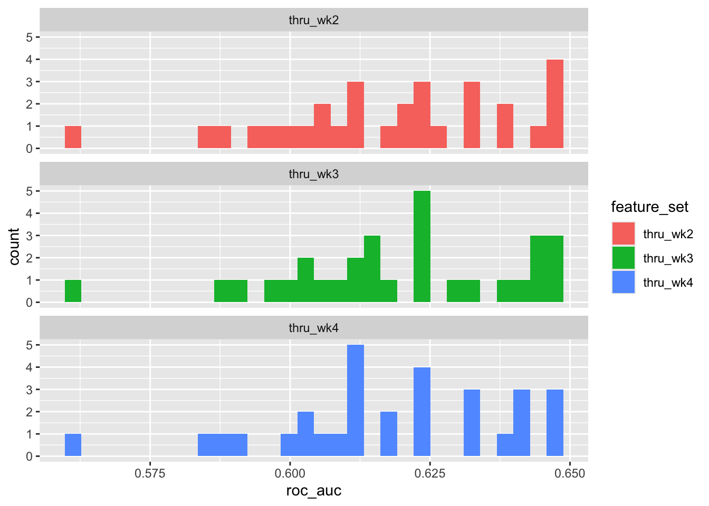

library(tidyverse)
library(tidymodels)Analysis Workflow Step 2: Inner Loop Model Selection
Setup
Load libraries
Source functions file
source("fun_moodivate.R")This functions file (fun_moodivate.R) contains many functions that are used throughout the Moodivate project analysis scripts. Functions split data, fit and evaluate models, and provide helper functionality for the modeling process. See all annotated code building functions within fun_moodivate.R.
Read in data
Read in results file (“results.csv”) created in 01_fit_inner.qmd. This file contains one row per model configuration (unique combination of model tuning parameters and feature set) for each held-out fold. Each row contains the model configuration information (outer split number, inner split number, feature set, hp1 [alpha/mixture], and hp2 [lambda/penalty]). Each row also contains performance metrics for the model fit in the held-in data and evaluated in the indicated validation set (held-out fold from inner loop).
cv_resample_type <- "nested"
results <- read_csv(str_c("~/Desktop/internship/moodivate/results_",
cv_resample_type, ".csv"),
show_col_types = FALSE) |>
glimpse()Rows: 990,000
Columns: 13
$ config_num <dbl> 1, 1, 1, 1, 1, 1, 1, 1, 1, 1, 1, 1, 1, 1, 1, 1, 1, 1, …
$ outer_split_num <dbl> 1, 1, 1, 1, 1, 1, 1, 1, 1, 1, 1, 1, 1, 1, 1, 1, 1, 1, …
$ inner_split_num <dbl> 1, 1, 1, 1, 1, 1, 1, 1, 1, 1, 1, 1, 1, 1, 1, 1, 1, 1, …
$ feature_set <chr> "thru_wk2", "thru_wk2", "thru_wk2", "thru_wk2", "thru_…
$ hp1 <dbl> 0, 0, 0, 0, 0, 0, 0, 0, 0, 0, 0, 0, 0, 0, 0, 0, 0, 0, …
$ hp2 <dbl> 0.0003354626, 0.0003711182, 0.0004105636, 0.0004542015…
$ accuracy <dbl> 0.516129, 0.516129, 0.516129, 0.516129, 0.516129, 0.51…
$ sens <dbl> 0.4, 0.4, 0.4, 0.4, 0.4, 0.4, 0.4, 0.4, 0.4, 0.4, 0.4,…
$ spec <dbl> 0.625, 0.625, 0.625, 0.625, 0.625, 0.625, 0.625, 0.625…
$ ppv <dbl> 0.5, 0.5, 0.5, 0.5, 0.5, 0.5, 0.5, 0.5, 0.5, 0.5, 0.5,…
$ npv <dbl> 0.5263158, 0.5263158, 0.5263158, 0.5263158, 0.5263158,…
$ roc_auc <dbl> 0.4208333, 0.4208333, 0.4208333, 0.4208333, 0.4208333,…
$ new_config_num <dbl> 1, 2, 3, 4, 5, 6, 7, 8, 9, 10, 11, 12, 13, 14, 15, 16,…Process metrics
Check for duplicates
nrow(results)[1] 990000results <- results |>
distinct(outer_split_num, inner_split_num, feature_set, hp1, hp2,
.keep_all = TRUE)
nrow(results)[1] 990000No duplicates
Checks that breakdowns are as expected. Should be equal numbers of each value.
results |> janitor::tabyl(outer_split_num) outer_split_num n percent
1 33000 0.03333333
2 33000 0.03333333
3 33000 0.03333333
4 33000 0.03333333
5 33000 0.03333333
6 33000 0.03333333
7 33000 0.03333333
8 33000 0.03333333
9 33000 0.03333333
10 33000 0.03333333
11 33000 0.03333333
12 33000 0.03333333
13 33000 0.03333333
14 33000 0.03333333
15 33000 0.03333333
16 33000 0.03333333
17 33000 0.03333333
18 33000 0.03333333
19 33000 0.03333333
20 33000 0.03333333
21 33000 0.03333333
22 33000 0.03333333
23 33000 0.03333333
24 33000 0.03333333
25 33000 0.03333333
26 33000 0.03333333
27 33000 0.03333333
28 33000 0.03333333
29 33000 0.03333333
30 33000 0.03333333results |> janitor::tabyl(inner_split_num) inner_split_num n percent
1 99000 0.1
2 99000 0.1
3 99000 0.1
4 99000 0.1
5 99000 0.1
6 99000 0.1
7 99000 0.1
8 99000 0.1
9 99000 0.1
10 99000 0.1results |> janitor::tabyl(hp1) hp1 n percent
0.0 90000 0.09090909
0.1 90000 0.09090909
0.2 90000 0.09090909
0.3 90000 0.09090909
0.4 90000 0.09090909
0.5 90000 0.09090909
0.6 90000 0.09090909
0.7 90000 0.09090909
0.8 90000 0.09090909
0.9 90000 0.09090909
1.0 90000 0.09090909results |> janitor::tabyl(hp2) hp2 n percent
0.0003354626 9900 0.01
0.0003711182 9900 0.01
0.0004105636 9900 0.01
0.0004542015 9900 0.01
0.0005024775 9900 0.01
0.0005558848 9900 0.01
0.0006149686 9900 0.01
0.0006803322 9900 0.01
0.0007526433 9900 0.01
0.0008326401 9900 0.01
0.0009211396 9900 0.01
0.0010190450 9900 0.01
0.0011273580 9900 0.01
0.0012471820 9900 0.01
0.0013797420 9900 0.01
0.0015263920 9900 0.01
0.0016886290 9900 0.01
0.0018681100 9900 0.01
0.0020666670 9900 0.01
0.0022863280 9900 0.01
0.0025293370 9900 0.01
0.0027981750 9900 0.01
0.0030955870 9900 0.01
0.0034246100 9900 0.01
0.0037886040 9900 0.01
0.0041912870 9900 0.01
0.0046367700 9900 0.01
0.0051296020 9900 0.01
0.0056748160 9900 0.01
0.0062779800 9900 0.01
0.0069452520 9900 0.01
0.0076834480 9900 0.01
0.0085001050 9900 0.01
0.0094035630 9900 0.01
0.0104030467 9900 0.01
0.0115087638 9900 0.01
0.0127320052 9900 0.01
0.0140852622 9900 0.01
0.0155823540 9900 0.01
0.0172385683 9900 0.01
0.0190708181 9900 0.01
0.0210978137 9900 0.01
0.0233402543 9900 0.01
0.0258210389 9900 0.01
0.0285655008 9900 0.01
0.0316016655 9900 0.01
0.0349605380 9900 0.01
0.0386764167 9900 0.01
0.0427872490 9900 0.01
0.0473350120 9900 0.01
0.0523661470 9900 0.01
0.0579320302 9900 0.01
0.0640894990 9900 0.01
0.0709014320 9900 0.01
0.0784373910 9900 0.01
0.0867743290 9900 0.01
0.0959973830 9900 0.01
0.1062007357 9900 0.01
0.1174885800 9900 0.01
0.1299761846 9900 0.01
0.1437910695 9900 0.01
0.1590743083 9900 0.01
0.1759819691 9900 0.01
0.1946867083 9900 0.01
0.2153795334 9900 0.01
0.2382717537 9900 0.01
0.2635971381 9900 0.01
0.2916143020 9900 0.01
0.3226093497 9900 0.01
0.3568987930 9900 0.01
0.3948327864 9900 0.01
0.4367987011 9900 0.01
0.4832250812 9900 0.01
0.5345860199 9900 0.01
0.5914060006 9900 0.01
0.6542652529 9900 0.01
0.7238056780 9900 0.01
0.8007374030 9900 0.01
0.8858460329 9900 0.01
0.9800006730 9900 0.01
1.0841628049 9900 0.01
1.1993961020 9900 0.01
1.3268772946 9900 0.01
1.4679081848 9900 0.01
1.6239289404 9900 0.01
1.7965328013 9900 0.01
1.9874823497 9900 0.01
2.1987275087 9900 0.01
2.4324254543 9900 0.01
2.6909626442 9900 0.01
2.9769791875 9900 0.01
3.2933958046 9900 0.01
3.6434436530 9900 0.01
4.0306973228 9900 0.01
4.4591113395 9900 0.01
4.9330605466 9900 0.01
5.4573847800 9900 0.01
6.0374382910 9900 0.01
6.6791444232 9900 0.01
7.3890560990 9900 0.01results |> janitor::tabyl(feature_set) feature_set n percent
thru_wk2 330000 0.3333333
thru_wk3 330000 0.3333333
thru_wk4 330000 0.3333333Median metrics across inner folds for model configurations
This process groups by outer_split_number, feature_set, hp1, and hp2 such that each group contains the 10 inner held-out folds per unique combination of outer split number, feature set, and tuning parameters. The summarize() function then averages model performance metrics across the 10 held-out folds (i.e., validation sets). Validation set performance will be used for model selection in script 03_fit_eval_outer.qmd.
metrics_avg <- results |>
group_by(outer_split_num, feature_set, hp1, hp2) |>
summarize(across(c(accuracy, roc_auc,
sens, spec, ppv, npv),
median),
n_jobs = n(), .groups = "drop") |>
relocate(n_jobs) |>
arrange(desc(roc_auc)) |>
ungroup()Review
unique(metrics_avg$n_jobs)[1] 10The n_jobs variable should always be 10 jobs (10 inner held-out folds per combination of outer split number, feature set, and tuning parameters).
Performance: Through Week 2 Models
metrics_avg |>
filter(feature_set == "thru_wk2") |>
slice(1:50) |>
print()# A tibble: 50 × 11
n_jobs outer_split_num feature_set hp1 hp2 accuracy roc_auc sens spec
<int> <dbl> <chr> <dbl> <dbl> <dbl> <dbl> <dbl> <dbl>
1 10 12 thru_wk2 0 7.39 0.541 0.585 0.467 0.733
2 10 12 thru_wk2 0.1 0.483 0.517 0.585 0.433 0.688
3 10 12 thru_wk2 0.1 0.535 0.525 0.585 0.433 0.688
4 10 12 thru_wk2 0.1 0.591 0.525 0.585 0.433 0.688
5 10 12 thru_wk2 0.1 0.654 0.525 0.585 0.433 0.688
6 10 12 thru_wk2 0.1 0.724 0.525 0.585 0.433 0.688
7 10 12 thru_wk2 0.1 0.801 0.525 0.585 0.433 0.688
8 10 12 thru_wk2 0.1 0.886 0.525 0.585 0.433 0.688
9 10 12 thru_wk2 0.1 0.980 0.525 0.585 0.433 0.688
10 10 12 thru_wk2 0.1 1.08 0.525 0.585 0.433 0.688
11 10 12 thru_wk2 0.1 1.20 0.525 0.585 0.433 0.688
12 10 12 thru_wk2 0.1 1.33 0.525 0.585 0.433 0.688
13 10 12 thru_wk2 0.1 1.47 0.525 0.585 0.433 0.688
14 10 12 thru_wk2 0.1 1.62 0.525 0.585 0.433 0.688
15 10 12 thru_wk2 0.1 1.80 0.525 0.585 0.433 0.688
16 10 12 thru_wk2 0.1 1.99 0.525 0.585 0.433 0.688
17 10 12 thru_wk2 0.1 2.20 0.525 0.585 0.433 0.688
18 10 12 thru_wk2 0.1 2.43 0.525 0.585 0.433 0.688
19 10 12 thru_wk2 0.1 2.69 0.525 0.585 0.433 0.688
20 10 12 thru_wk2 0.1 2.98 0.525 0.585 0.433 0.688
21 10 12 thru_wk2 0.1 3.29 0.525 0.585 0.433 0.688
22 10 12 thru_wk2 0.1 3.64 0.525 0.585 0.433 0.688
23 10 12 thru_wk2 0.1 4.03 0.525 0.585 0.433 0.688
24 10 12 thru_wk2 0.1 4.46 0.525 0.585 0.433 0.688
25 10 12 thru_wk2 0.1 4.93 0.525 0.585 0.433 0.688
26 10 12 thru_wk2 0.1 5.46 0.525 0.585 0.433 0.688
27 10 12 thru_wk2 0.1 6.04 0.525 0.585 0.433 0.688
28 10 12 thru_wk2 0.1 6.68 0.525 0.585 0.433 0.688
29 10 12 thru_wk2 0.1 7.39 0.525 0.585 0.433 0.688
30 10 12 thru_wk2 0.2 0.238 0.517 0.585 0.433 0.688
31 10 12 thru_wk2 0.2 0.264 0.525 0.585 0.433 0.688
32 10 12 thru_wk2 0.2 0.292 0.525 0.585 0.433 0.688
33 10 12 thru_wk2 0.2 0.323 0.525 0.585 0.433 0.688
34 10 12 thru_wk2 0.2 0.357 0.525 0.585 0.433 0.688
35 10 12 thru_wk2 0.2 0.395 0.525 0.585 0.433 0.688
36 10 12 thru_wk2 0.2 0.437 0.525 0.585 0.433 0.688
37 10 12 thru_wk2 0.2 0.483 0.525 0.585 0.433 0.688
38 10 12 thru_wk2 0.2 0.535 0.525 0.585 0.433 0.688
39 10 12 thru_wk2 0.2 0.591 0.525 0.585 0.433 0.688
40 10 12 thru_wk2 0.2 0.654 0.525 0.585 0.433 0.688
41 10 12 thru_wk2 0.2 0.724 0.525 0.585 0.433 0.688
42 10 12 thru_wk2 0.2 0.801 0.525 0.585 0.433 0.688
43 10 12 thru_wk2 0.2 0.886 0.525 0.585 0.433 0.688
44 10 12 thru_wk2 0.2 0.980 0.525 0.585 0.433 0.688
45 10 12 thru_wk2 0.2 1.08 0.525 0.585 0.433 0.688
46 10 12 thru_wk2 0.2 1.20 0.525 0.585 0.433 0.688
47 10 12 thru_wk2 0.2 1.33 0.525 0.585 0.433 0.688
48 10 12 thru_wk2 0.2 1.47 0.525 0.585 0.433 0.688
49 10 12 thru_wk2 0.2 1.62 0.525 0.585 0.433 0.688
50 10 12 thru_wk2 0.2 1.80 0.525 0.585 0.433 0.688
ppv npv
<dbl> <dbl>
1 0.547 0.535
2 0.523 0.512
3 0.523 0.525
4 0.523 0.525
5 0.523 0.525
6 0.523 0.525
7 0.523 0.525
8 0.523 0.525
9 0.523 0.525
10 0.523 0.525
11 0.523 0.525
12 0.523 0.525
13 0.523 0.525
14 0.523 0.525
15 0.523 0.525
16 0.523 0.525
17 0.523 0.525
18 0.523 0.525
19 0.523 0.525
20 0.523 0.525
21 0.523 0.525
22 0.523 0.525
23 0.523 0.525
24 0.523 0.525
25 0.523 0.525
26 0.523 0.525
27 0.523 0.525
28 0.523 0.525
29 0.523 0.525
30 0.523 0.512
31 0.523 0.525
32 0.523 0.525
33 0.523 0.525
34 0.523 0.525
35 0.523 0.525
36 0.523 0.525
37 0.523 0.525
38 0.523 0.525
39 0.523 0.525
40 0.523 0.525
41 0.523 0.525
42 0.523 0.525
43 0.523 0.525
44 0.523 0.525
45 0.523 0.525
46 0.523 0.525
47 0.523 0.525
48 0.523 0.525
49 0.523 0.525
50 0.523 0.525metrics_avg |>
filter(feature_set == "thru_wk2") |>
pull(roc_auc) |>
hist()
Performance: Through Week 3 Models
metrics_avg |>
filter(feature_set == "thru_wk3") |>
slice(1:50) |>
print()# A tibble: 50 × 11
n_jobs outer_split_num feature_set hp1 hp2 accuracy roc_auc sens spec
<int> <dbl> <chr> <dbl> <dbl> <dbl> <dbl> <dbl> <dbl>
1 10 5 thru_wk3 0 0.0286 0.532 0.621 0.6 0.579
2 10 5 thru_wk3 0 0.0233 0.532 0.619 0.6 0.579
3 10 5 thru_wk3 0.1 0.0115 0.565 0.619 0.6 0.612
4 10 5 thru_wk3 0.1 0.0127 0.548 0.619 0.6 0.612
5 10 5 thru_wk3 0.1 0.0156 0.548 0.619 0.6 0.612
6 10 5 thru_wk3 0.1 0.0211 0.532 0.619 0.6 0.612
7 10 5 thru_wk3 0.2 0.00628 0.581 0.619 0.6 0.612
8 10 5 thru_wk3 0.2 0.0156 0.548 0.619 0.567 0.625
9 10 5 thru_wk3 0.1 0.00940 0.565 0.617 0.6 0.612
10 10 5 thru_wk3 0.1 0.0104 0.565 0.617 0.6 0.612
11 10 5 thru_wk3 0.1 0.0141 0.548 0.617 0.6 0.612
12 10 5 thru_wk3 0.1 0.0172 0.548 0.617 0.6 0.612
13 10 5 thru_wk3 0.1 0.0191 0.548 0.617 0.6 0.612
14 10 5 thru_wk3 0.1 0.0233 0.516 0.617 0.6 0.625
15 10 5 thru_wk3 0.2 0.00695 0.581 0.617 0.6 0.612
16 10 5 thru_wk3 0.2 0.00768 0.565 0.617 0.6 0.612
17 10 5 thru_wk3 0.2 0.00850 0.565 0.617 0.6 0.612
18 10 5 thru_wk3 0.2 0.0172 0.532 0.617 0.6 0.625
19 10 5 thru_wk3 0.3 0.00513 0.581 0.617 0.6 0.612
20 10 5 thru_wk3 0.3 0.00567 0.581 0.617 0.6 0.612
21 10 5 thru_wk3 0.3 0.00628 0.581 0.617 0.6 0.612
22 10 5 thru_wk3 0.3 0.0115 0.548 0.617 0.567 0.625
23 10 5 thru_wk3 1 0.00310 0.581 0.617 0.567 0.612
24 10 5 thru_wk3 0 0.0211 0.532 0.615 0.6 0.579
25 10 5 thru_wk3 0 0.0316 0.525 0.615 0.567 0.579
26 10 5 thru_wk3 0 0.0350 0.548 0.615 0.567 0.579
27 10 5 thru_wk3 0.1 0.0258 0.532 0.615 0.6 0.625
28 10 5 thru_wk3 0.2 0.00567 0.581 0.615 0.6 0.612
29 10 5 thru_wk3 0.2 0.00940 0.565 0.615 0.6 0.612
30 10 5 thru_wk3 0.2 0.0141 0.548 0.615 0.567 0.625
31 10 5 thru_wk3 0.2 0.0191 0.548 0.615 0.6 0.625
32 10 5 thru_wk3 0.2 0.0211 0.532 0.615 0.6 0.594
33 10 5 thru_wk3 0.3 0.00695 0.565 0.615 0.6 0.612
34 10 5 thru_wk3 0.3 0.00940 0.548 0.615 0.567 0.646
35 10 5 thru_wk3 0.4 0.00379 0.581 0.615 0.6 0.612
36 10 5 thru_wk3 0.4 0.00419 0.581 0.615 0.6 0.612
37 10 5 thru_wk3 0.4 0.00695 0.548 0.615 0.567 0.646
38 10 5 thru_wk3 0.4 0.00850 0.548 0.615 0.567 0.646
39 10 5 thru_wk3 0.4 0.00940 0.548 0.615 0.567 0.656
40 10 5 thru_wk3 0.5 0.00419 0.581 0.615 0.6 0.612
41 10 5 thru_wk3 0.5 0.00850 0.565 0.615 0.567 0.625
42 10 5 thru_wk3 0.6 0.00379 0.581 0.615 0.6 0.612
43 10 5 thru_wk3 0.7 0.00695 0.548 0.615 0.567 0.594
44 10 5 thru_wk3 0.9 0.00342 0.565 0.615 0.567 0.612
45 10 5 thru_wk3 0 0.0191 0.565 0.612 0.6 0.579
46 10 5 thru_wk3 0 0.0258 0.532 0.612 0.6 0.579
47 10 5 thru_wk3 0.2 0.0115 0.548 0.612 0.6 0.625
48 10 5 thru_wk3 0.2 0.0127 0.548 0.612 0.6 0.625
49 10 5 thru_wk3 0.3 0.00419 0.581 0.612 0.6 0.612
50 10 5 thru_wk3 0.3 0.00464 0.581 0.612 0.6 0.612
ppv npv
<dbl> <dbl>
1 0.511 0.555
2 0.511 0.555
3 0.547 0.607
4 0.530 0.590
5 0.530 0.590
6 0.511 0.569
7 0.573 0.625
8 0.530 0.583
9 0.558 0.607
10 0.547 0.607
11 0.530 0.590
12 0.530 0.590
13 0.530 0.578
14 0.5 0.555
15 0.573 0.618
16 0.558 0.607
17 0.558 0.607
18 0.519 0.563
19 0.573 0.625
20 0.573 0.625
21 0.573 0.618
22 0.530 0.590
23 0.558 0.594
24 0.511 0.555
25 0.511 0.536
26 0.530 0.563
27 0.511 0.582
28 0.573 0.625
29 0.558 0.607
30 0.530 0.590
31 0.530 0.590
32 0.511 0.582
33 0.558 0.607
34 0.530 0.583
35 0.573 0.625
36 0.573 0.625
37 0.530 0.583
38 0.530 0.590
39 0.530 0.590
40 0.561 0.625
41 0.542 0.583
42 0.573 0.612
43 0.530 0.583
44 0.547 0.584
45 0.547 0.602
46 0.511 0.555
47 0.530 0.590
48 0.530 0.590
49 0.573 0.625
50 0.573 0.625metrics_avg |>
filter(feature_set == "thru_wk3") |>
pull(roc_auc) |>
hist()
Performance: Through Week 4 Models
metrics_avg |>
filter(feature_set == "thru_wk4") |>
slice(1:50) |>
print()# A tibble: 50 × 11
n_jobs outer_split_num feature_set hp1 hp2 accuracy roc_auc sens spec
<int> <dbl> <chr> <dbl> <dbl> <dbl> <dbl> <dbl> <dbl>
1 10 5 thru_wk4 0.4 0.0127 0.541 0.625 0.533 0.517
2 10 5 thru_wk4 0.5 0.0115 0.541 0.625 0.533 0.517
3 10 5 thru_wk4 0.7 0.00850 0.558 0.625 0.567 0.517
4 10 5 thru_wk4 1 0.00628 0.567 0.625 0.6 0.517
5 10 5 thru_wk4 0.5 0.0104 0.541 0.623 0.533 0.517
6 10 5 thru_wk4 0.8 0.00695 0.567 0.623 0.6 0.517
7 10 5 thru_wk4 0.8 0.00768 0.567 0.623 0.6 0.517
8 10 5 thru_wk4 0.9 0.00695 0.567 0.623 0.6 0.517
9 10 5 thru_wk4 0.3 0.0156 0.541 0.621 0.533 0.517
10 10 5 thru_wk4 0.4 0.00940 0.548 0.621 0.567 0.517
11 10 5 thru_wk4 0.4 0.0115 0.541 0.621 0.533 0.517
12 10 5 thru_wk4 0.5 0.00695 0.567 0.621 0.6 0.517
13 10 5 thru_wk4 0.5 0.00850 0.558 0.621 0.567 0.517
14 10 5 thru_wk4 0.5 0.00940 0.548 0.621 0.567 0.517
15 10 5 thru_wk4 0.6 0.00628 0.567 0.621 0.6 0.517
16 10 5 thru_wk4 0.6 0.00850 0.558 0.621 0.567 0.517
17 10 5 thru_wk4 0.6 0.00940 0.541 0.621 0.533 0.517
18 10 5 thru_wk4 0.6 0.0104 0.541 0.621 0.533 0.517
19 10 5 thru_wk4 0.7 0.00567 0.567 0.621 0.6 0.517
20 10 5 thru_wk4 0.7 0.00628 0.567 0.621 0.6 0.517
21 10 5 thru_wk4 0.7 0.00695 0.567 0.621 0.6 0.517
22 10 5 thru_wk4 0.7 0.00768 0.567 0.621 0.6 0.517
23 10 5 thru_wk4 0.7 0.00940 0.574 0.621 0.567 0.517
24 10 5 thru_wk4 0.8 0.00567 0.567 0.621 0.6 0.517
25 10 5 thru_wk4 0.8 0.00850 0.574 0.621 0.567 0.517
26 10 5 thru_wk4 0.9 0.00628 0.567 0.621 0.6 0.517
27 10 5 thru_wk4 1 0.00567 0.567 0.621 0.6 0.517
28 10 5 thru_wk4 0.8 0.00940 0.574 0.619 0.567 0.533
29 10 5 thru_wk4 0.9 0.00768 0.558 0.619 0.567 0.517
30 10 5 thru_wk4 0.9 0.00850 0.574 0.619 0.567 0.533
31 10 5 thru_wk4 1 0.00695 0.574 0.619 0.633 0.517
32 10 5 thru_wk4 0.3 0.0115 0.541 0.619 0.533 0.517
33 10 5 thru_wk4 0.3 0.0141 0.541 0.619 0.533 0.517
34 10 5 thru_wk4 0.4 0.00768 0.548 0.619 0.567 0.533
35 10 5 thru_wk4 0.4 0.0104 0.541 0.619 0.533 0.517
36 10 5 thru_wk4 0.5 0.00628 0.558 0.619 0.6 0.517
37 10 5 thru_wk4 0.5 0.00768 0.567 0.619 0.6 0.517
38 10 5 thru_wk4 0.6 0.00567 0.567 0.619 0.6 0.517
39 10 5 thru_wk4 0.6 0.00695 0.567 0.619 0.6 0.517
40 10 5 thru_wk4 0.6 0.00768 0.567 0.619 0.6 0.517
41 10 5 thru_wk4 0.7 0.00513 0.567 0.619 0.6 0.517
42 10 5 thru_wk4 0.8 0.00464 0.567 0.619 0.6 0.517
43 10 5 thru_wk4 0.8 0.00513 0.567 0.619 0.6 0.5
44 10 5 thru_wk4 0.8 0.00628 0.567 0.619 0.6 0.517
45 10 5 thru_wk4 0.9 0.00419 0.567 0.619 0.6 0.517
46 10 5 thru_wk4 0.9 0.00464 0.567 0.619 0.6 0.5
47 10 5 thru_wk4 0.3 0.0104 0.541 0.617 0.533 0.517
48 10 5 thru_wk4 0.3 0.0127 0.541 0.617 0.533 0.517
49 10 5 thru_wk4 0.4 0.00695 0.548 0.617 0.6 0.517
50 10 5 thru_wk4 0.4 0.00850 0.541 0.617 0.533 0.517
ppv npv
<dbl> <dbl>
1 0.533 0.556
2 0.533 0.556
3 0.545 0.561
4 0.551 0.571
5 0.533 0.542
6 0.551 0.571
7 0.551 0.571
8 0.551 0.571
9 0.533 0.556
10 0.539 0.561
11 0.533 0.542
12 0.551 0.571
13 0.545 0.561
14 0.539 0.561
15 0.551 0.571
16 0.545 0.561
17 0.539 0.542
18 0.533 0.556
19 0.551 0.571
20 0.551 0.571
21 0.551 0.571
22 0.551 0.571
23 0.551 0.575
24 0.551 0.571
25 0.551 0.575
26 0.551 0.571
27 0.551 0.571
28 0.554 0.575
29 0.545 0.561
30 0.554 0.575
31 0.551 0.593
32 0.530 0.542
33 0.533 0.556
34 0.533 0.567
35 0.533 0.542
36 0.545 0.571
37 0.551 0.571
38 0.551 0.571
39 0.551 0.571
40 0.551 0.571
41 0.551 0.571
42 0.551 0.571
43 0.551 0.571
44 0.551 0.571
45 0.551 0.571
46 0.551 0.571
47 0.530 0.542
48 0.533 0.542
49 0.539 0.571
50 0.530 0.542metrics_avg |>
filter(feature_set == "thru_wk4") |>
pull(roc_auc) |>
hist()
Save average metrics file (all feature sets)
metrics_avg |>
arrange(outer_split_num, feature_set, hp1, hp2) |>
readr::write_csv("~/Desktop/internship/moodivate/metrics_inner_avg.csv")Plot tuning parameters
This plot shows performance as a function of alpha/mixture (hp1) and lambda/penalty (hp2) separately for each feature_set. With shuffled data, there is no real pattern of performance as a function of tuning parameters, creating odd-looking output.
With real data, we will confirm that the plot captures a peak (i.e., local maximum) in performance (auROC) before continuing to outer loop model fitting and evaluation. If performance is increasing toward one end of the range for either tuning parameter, we will NOT yet proceed to fitting and evaluating models in the outer loop (in 03_fit_eval_outer.qmd). First, we will add model configurations that expand the range, run those additional configurations in the inner loop, and re-evaluate model performance as a function of tuning parameters.
metrics_plot <- metrics_avg |>
mutate(feature_set = case_when(
feature_set == "thru_wk2" ~ "Weeks 1 & 2",
feature_set == "thru_wk3" ~ "Weeks 1 - 3",
feature_set == "thru_wk4" ~ "Weeks 1 - 4",
TRUE ~ NA_character_
))
feature_sets <- unique(metrics_plot$feature_set)
for (i in feature_sets) {
results_i <- metrics_plot %>%
filter(feature_set == i)
plot_title <- stringr::str_c("Plotting glmnet hyperparameters for ",
i, " models")
plot_i <- results_i %>%
mutate(hp1 = factor(hp1, ordered = TRUE)) %>%
ggplot(mapping = aes(x = log(hp2),
y = roc_auc,
group = hp1,
color = hp1)) +
geom_line() +
scale_color_discrete(name = "mixture (alpha)") +
labs(title = plot_title, x = "penalty (lambda)", y = "auROC")
print(plot_i)
}